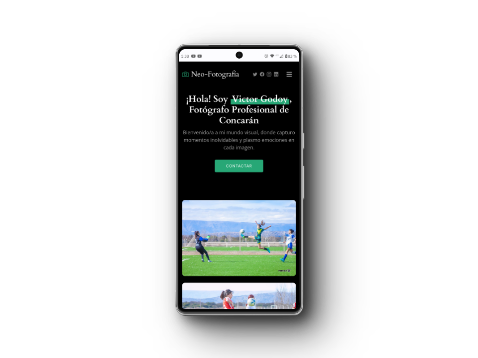
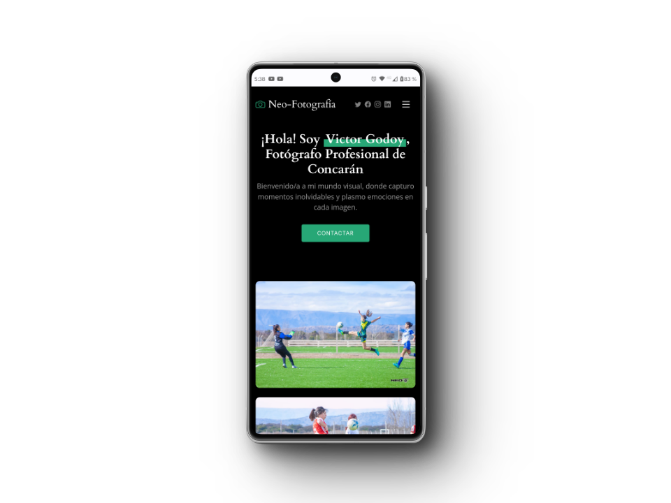

Experience
-
Computer Technician
NeoTecs Informatics
(Self-employed)
Feb. 2015 - Present (+8 years)
Concarán, San LuisAs a self-employed Computer Technician at NeoTecs, I have developed a strong track record in problem-solving and implementing technological solutions. I am also in the world of programming and Front End development with 1 year of experience. I use frames like ReactJS + Vite, NestJs, NodeJS.
Responsibilities:
▪ Development of web applications and providing web development services, with a focus on responsive websites for different devices. I have perfected myself in this field in recent times through self-study.
▪ Diagnosing and resolving technical problems, both hardware and software, to ensure the operational continuity of key computer systems.
▪ Installation and configuration of Wi-Fi networks and security cameras, contributing to seamless connectivity and effective surveillance systems.
▪ Managing the configuration and maintenance of local area networks (LAN) and internet connection systems, ensuring smooth and stable connectivity. -
Receptionist
Hotel Quintana
Jan. 2010 - Dec. 2015 (5 years)
San Luis, ArgentinaMy time as a receptionist at a 4-star hotel in the beautiful city of San Luis, Argentina, was enriching and rewarding. During this experience, I perfected my ability to establish effective communication with guests, providing exceptional service and ensuring an unforgettable stay.
▪ Cash Handling: As a receptionist, I was responsible for precise handling of financial transactions, ensuring accurate record-keeping of payments and billing for services provided to guests.
▪ English Communication: I maintained fluent communication in English with international guests, ensuring they felt comfortable and understood during their stay.
▪ Customer Service: I provided exceptional service, attending to the needs and desires of guests with kindness and professionalism, resulting in positive reviews and repeat customers.
▪ Problem Solving: I faced challenges effectively, solving problems and unforeseen situations calmly and diligently to ensure guest satisfaction.
▪ Reservation Management: I coordinated and efficiently managed room and service reservations, ensuring smooth organization and a hassle-free experience for guests. -
Maintenance and PLC Operator
Italian Style Ceramic
Dates 2007 - 2010
Concarán, San LuisInitially, I worked as a PLC operator and production worker, in which my responsibility was: ForkLift (Forklift) handling, operating production. Later, I was promoted to the position of Maintenance and Metallurgy Supervisor. My responsibilities in maintenance at that time were:
▪ Assembly of mineral mills
▪ Electro-mechanical connections
▪ PLC programming -
Electronic Technician
Electronics Nico
Dates 2005 - 2007
San Luis, CapitalI worked as an electronics technician, providing warranty service to different businesses affiliated with Electronics Nico, such as (Ribeiro, Musimundo, Megatone, and Garbarino), specializing in the repair of PCs, LCD and LED TVs, and other electronic devices. With experience in diagnosing and solving problems, my technical skills ensure reliable and efficient service.
▪ Responsible for ordering and supplying spare parts
▪ Repair of LCD and LED TVs
▪ Repair of electric kitchen appliances -
Pharmacy Assistant
Farmacia Concarán
Dates 2003 - 2005
Concarán, San LuisI served as a pharmacy assistant, providing customer service, processing mutual orders, managing the cash register, making deliveries, and more.
Español
Education
-
My Institution
NeoTecs Informatics (Self-taught)
Web Application Development, with ReactJS + Vite, NextJS, programming with JavaScript and TypeScript.
Feb. 2023 - (Currently learning)Skills:
▪ Vite + ReactJS development framework environment
▪ JavaScript programming language
▪ Back-end with NestJS / NodeJS -
Institution
Argentina Program 4.0 (Ticmas Academy)
Mobile Application Development, Android Studio workspace, Kotlin and C++ languages.
Sept. 2023 - May 2024 (Currently enrolled)▪ Android Studio development environment and frameworks
▪ Kotlin programming language
▪ C++ programming -
Institution
Argentina Program 4.0 (Ticmas Academy)
Front-End Developer and Web APIs, Computer programming, specific applications
Oct. 2022 - Mar. 2023Skills:
▪ Structures of a web project
▪ Multimedia elements
▪ CSS presentation layer
▪ Extended CSS and its frameworks
▪ Hosting and server types
▪ Logical thinking
▪ Types of programming languages (PHP - Python)
▪ Programming structures
▪ JavaScript Fundamentals I
▪ JavaScript Fundamentals II
-
Licenses and Certifications
Front-End Developer - Argentina Program
Issued: Mar. 2023 Certificate -
Judicial Informatics
(University of La Punta)
Issued: Feb. 2023My training in Judicial Informatics at the University of La Punta has provided me with solid knowledge in the expert use of Microsoft Office, including Excel and Word. Additionally, I have acquired skills in navigating and handling internal judicial programs of the province of San Luis. This training allows me to efficiently perform tasks related to the administration and processing of judicial cases, contributing to the effectiveness and smoothness of procedures in the local judicial system.
-
English
Tina & Bell Institute
Mar. 1999 - Jul. 2002 (3 years)
During my time at the Tina & Bell Institute, I immersed myself in a comprehensive English language learning experience. The institute's renowned teaching methodology and dedicated instructors allowed me to make significant advances in my language skills. Through interactive courses, participatory workshops, and immersive language practice, I perfected my listening, speaking, reading, and writing skills in English.

 
